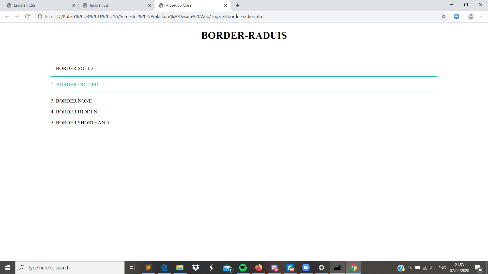

Border-Radius
Pendahuluan
Border radius (border-radius) adalah property baru yang berhubungan dengan border di CSS3. Berfungsi untuk menambahkan lengkungan disetiap sudut elemen, sehingga kita tidak perlu lagi menggunakan gambar lengkungan untuk membuat box dengan lengkungan disudutnya.
Codingan
<html>
<head>
<meta charset="utf-8">
<meta name="viewsport" content="width=device-width, initial-scale=1.0">
<title>A pseudo Class</title>
<link rel="stylesheet" type="text/css" href="border-radius.css">
</head>
<h1><center>BORDER-RADUIS</center></h1>
<body>
<div class="container">
<div class="circle"><p></p></div>
<div class="circle"><p>1. BORDER SOLID</p></div>
<div class="circle"><p>2. BORDER DOTTED</p></div>
<div class="circle"><p>3. BORDER NONE</p></div>
<div class="circle"><p>4. BORDER HIDDEN</p></div>
<div class="circle"><p>5. BORDER SHORTHAND</p></div>
<div class="circle"><p></p></div>
</div>
</body>
</html>
Kode CSS Internal
.container{
width: 80%;
margin: 5% 10%;
}
.cirlce{
width: 40px;
height: 40px;
margin: 10px 5px;
background: #20B2AA;
border: solid thin transparent;
border-radius: 100%;
font-size: 15px;
font-weight: 600;
float: left;
color: #FFFFFF;
text-align: center;
}
.cicrle p{
margin-top: 10px;
}
.circle:hover{
background: #FFFFFF;
color: #20B2AA;
border: solid thin #20B2AA;
cursor: pointer;
}
Hasil Screenshot

Analisis
Pada percobaan membuat border radius kita dapat memberikan variasi pada tampilan border dengan berbagai warna sesui dengan keinginan. Selain itu border radius juga membuat tampilan menjadi lebih menari